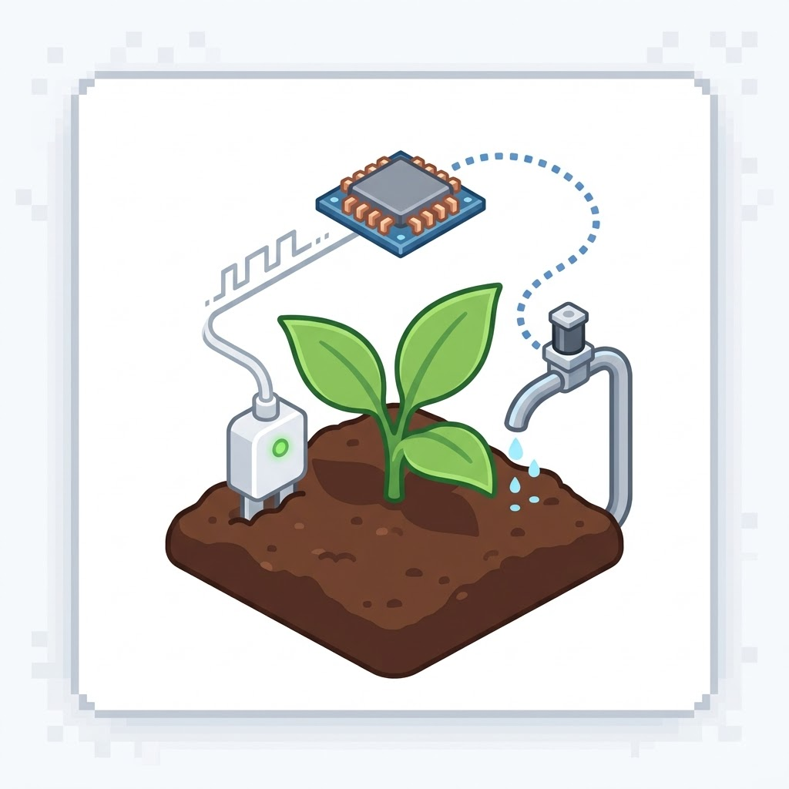

Irrigação Automatizada por Sensores
Por: Luiz Bernardo Viana
Boas-vindas ao meu blog! Usar sensores de umidade no solo permite regar a horta apenas quando necessário, economizando água e otimizando a saúde das plantas.
Inovação, tecnologia e sustentabilidade no cultivo e na agricultura

Por: Luiz Bernardo Viana
Boas-vindas ao meu blog! Usar sensores de umidade no solo permite regar a horta apenas quando necessário, economizando água e otimizando a saúde das plantas.

Por: Luiz Bernardo Viana
Os drones com câmeras térmicas e multiespectrais ajudam a identificar pragas, falta de nutrientes e falhas no plantio antes que fiquem visíveis a olho nu.
Fonte: Embrapa

Por: Luiz Bernardo Viana
Com a Internet das Coisas (IoT), é possível controlar temperatura, iluminação e ventilação de uma estufa direto pelo celular, garantindo produção o ano todo.
Fonte: AgTech News

Por: Luiz Bernardo Viana
O cultivo sem terra economiza até 90% de água em comparação à agricultura tradicional e permite criar hortas produtivas em pequenos espaços urbanos.
Fonte: Canal Rural

Por: Luiz Bernardo Viana
Aplicativos baseados em IA analisam fotos das folhas e diagnosticam doenças em segundos, sugerindo tratamentos orgânicos e precisos.
Fonte: Globo Rural

Por: Luiz Bernardo Viana
Monitorar o pH e a temperatura do composto orgânico garante um adubo de alta qualidade, transformando resíduos domésticos em supernutrientes para a horta.
Fonte: Ciclo Vivo